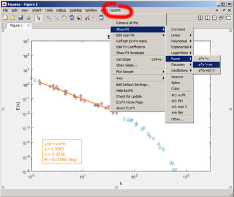

| EzyFit Getting Started |
The EzyFit toolbox for Matlab enables you to perform simple curve fitting of one-dimensional data using arbitrary fitting functions. It provides command-line functions and a basic graphical user interface for interactive selection of the data.
There are three ways to perform curve fitting with Matlab: the first one is using the 'Basic Fitting Interface' of Matlab, the second one is using fminsearch with anonymous functions, and the third one is to pay for the Curve Fitting Toolbox. However, for usual curve fitting of 1D data, you may find the first solution rather limited, the second one a little complicated, and the third one quite expensive...
The EzyFit Toolbox provides a free, simple and efficient way to perform quick curve fitting with arbitrary (nonlinear) fitting functions: You just have to type something like showfit('c+a/x^n') and EzyFit gives you the values for c, a and n and shows you the curve! EzyFit also provides a basic graphical user interface to interactively fit selected parts of your data.
First plot some sample data by typing plotsample in the command window (or simply click here to display the sample figure).
In the EzyFit menu of the figure window, select Showfit and choose an appropriate fitting function to fit the sample data. You may also click on the link that appears in the command window to choose the default fitting function associated to the sample plot. If the menu is not present in your figure window, type efmenu, or see the step 4 in the installation procedure.

Choose Undo Fit if you want to remove the fit.
If multiple curves are present in the figure, first select the one you want to fit, and then choose Showfit.
Two additional functions, getslope and showslope, return the slope of the selected line (use the menu Insert > Line), or drag a line of fixed slope, for a fit "by eye" of your data.
Although fitting your data from the EzyFit menu is fast and easy, using the command-line functions is much more powerful, and allows for using different properties for each fit (See the Settings page for details).
The key function of the toolbox is ezfit, which computes the coefficients that fit the data. The function showfit simply calls the function ezfit for the active curve, using the "Data Brushing" tool of Matlab (available since version 7.6). Type undofit to remove the last fit.
This example fits some noisy data by a power law c * x^n and plots the result:
plotsample power % a power law
showfit c*x^n
This example fits an histogram with a Gaussian, and displays the coefficients in the Array Editor:
plotsample hist % an histogram
f = ezfit('gauss'); % fits with a Gaussian
f % displays the fit structure
showfit(f); % displays the fit
editcoeff(f); % opens the Array Editor
Have a look to the Sample session for more examples.
See also the Frequently Asked Questions section and the Function by category section to learn more about this toolbox.